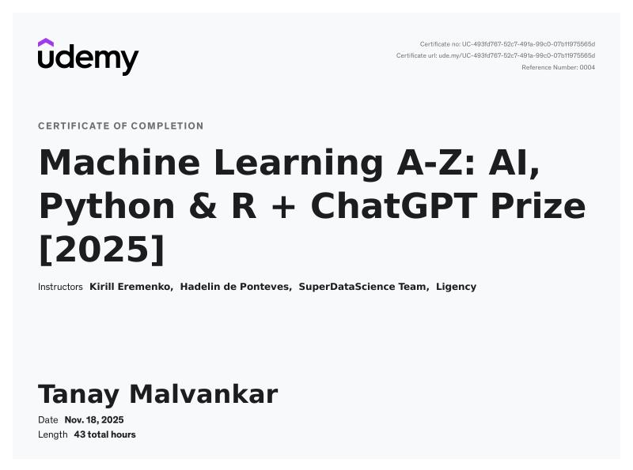
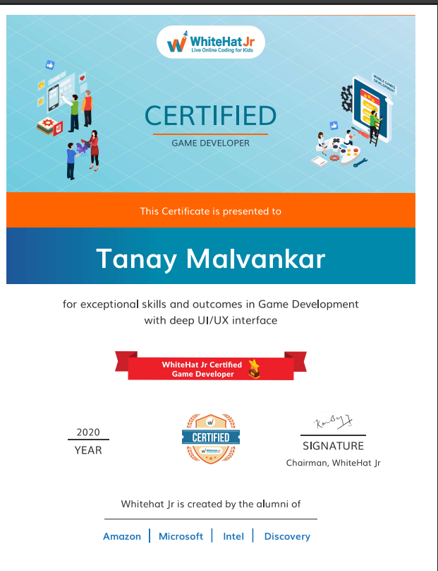

Tanay Malvankar's Resume
Summary
Highly motivated Artificial Intelligence and Data Science undergraduate with a strong academic
record (9.26 CGPA) and practical experience in Full Stack Development and Machine Learning.
Motivated to contribute my Java, Web Development, and Python skills in a professional
environment. Seeking an internship where I can contribute to team projects while learning
best practices in software development and data science from experienced mentors.
Education
- MET Rishikul Vidyalaya
- Alpha Jr College of Science and Arts
- Thadomal Shahani Engineering College
Work Experience
Tech Mahindra
Machine Learning & NLP Intern
- Assisted the team in analyzing text data using Python libraries and basic NLP concepts.
- Helped clean and organize raw datasets to make them ready for model training.
- Learned about the software development lifecycle and how AI models are deployed in real
industry scenarios.
- Gained exposure to how machine learning algorithms are applied to solve business problems.
Skills
- Languages: Python, Java, C++, C, JavaScript, HTML5, CSS3.
- Technologies: Java Web Frameworks, React.js, Basic Machine Learning (TensorFlow,
Keras, & Scikit-learn).
- Interests: Web Development, Data Analysis, REST APIs.
- Git, GitHub, VS Code, PyCharm.
Certifications
- Udemy: Machine Learning A-Z: AI, Python & R

- WhiteHatJr: Game Development
